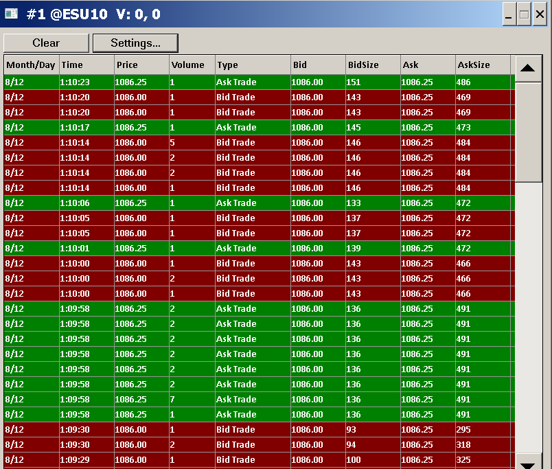

Time and Sales Window
{kind=link}
- Introduction
- Instructions
- Clear
- Settings Menu
- Time and Sales Settings
- Columns
- Show Bid and Ask Records
- Show Grid Lines
- Show Title Bar
- Include Milliseconds and Microseconds in Time
- Input Filtering >> Volume >= | Volume <=
- Input Filtering >> Price >= | Price <=
- Input Filtering >> Ask Size >= | Ask Size <=
- Input Filtering >> Bid Size >= | Bid Size <=
- Combined Filtering >> Volume >= | Volume <=
- Combined Filtering >> Trades >= | Trades <=
- List Font
- Highlight >> ByField
- Highlight >> Condition
- Highlight >> Value
- Highlight >> Color Row
- Highlight >> Color
- Highlight >> Bid Trade Alert
- Highlight >> Ask Trade Alert
- Combine Records >> Do Not Combine
- Combine Records >> Combine Records with Same Price and Type
- Combine Records >> Combine Records with Same Time and Price
- Combine Records >> Combine Records with Same Time and Type
- Combine Records >> Combine Records into Exchange Reported Original Summary Trade
- Attach/Detach Window
- Time and Sales Settings
- Color Configuration
- Column Descriptions
- Opening Multiple Time and Sales Windows for the Same Symbol
- Using Default Time and Sales Settings
- Keeping Same Time and Sales Window Visible across Chartbooks
- Time and Sales Window Not Visible
- Time and Sales Window Always on Top
- Time and Sales Window Not Updating
- Time and Sales Data During a Replay
- Comparisons of Time and Sales Data to Chart Bars, Bar Volume and to Numbers Bars
- Viewing Time and Sales Data as Studies on a Chart
- Accessing Time and Sales Data in Advanced Custom Studies
- Viewing Time and Sales on a Spreadsheet
- Solving Missing Time and Sales Records Issue
Introduction
The Time and Sales window lists in a table the Trades and Quotes received from the data feed. Trades refers to actual trades made for the symbol. Quotes refers to Bid and Ask data. Quotes can be optionally displayed based on the Show Bid and Ask Records setting.
Time and Sales data is another name for a trade by trade history which includes the date and time of the trade and the volume of the trade.
There are various filtering, record combining, highlighting, coloring, and column configuration options available.
Instructions
Follow these instructions to use the Time and Sales windows:
- Select Global Settings >> Data/Trade Service Settings on the Sierra Chart menu.
- The Number of Stored Time and Sales Records setting is set to the number of Time and Sales records for each Symbol held in memory. For example, if you set Number of Stored Time and Sales Records to 1000, then the Time and Sales window will be able to list up to 1000 rows initially, assuming 1000 records already exist, plus more as it fills up in real time. When you close and reopen the Time and Sales window or adjust its settings, 1000 rows will initially appear. Do not set the Number of Stored Time and Sales Records setting too high because it will slow down the Time and Sales window and maintaining a lot of records in memory will consume excessive memory.
- Press OK. Time and Sales setting in Data/Trade Service Settings does not need to be modified again unless you want to change it. If you did make a change to this setting, select File >> Disconnect and then File >> Connect to Data Feed.
- To open a Time and Sales window for a chart, select Chart >> Open Time and Sales Window on the Sierra Chart menu. Or, you can select File >> Open Time and Sales Window.
- If the Time and Sales window does not display when you try to open it, then select Chart >> Reset Child Windows. Open it again with Chart >> Open Time and Sales Window.
- The Time and Sales window is associated with a specific chart. Each chart can have only one associated Time and Sales window. Once you open a Time and Sales window for a chart, and you select Chart >> Open Time and Sales again, you will not get another Time and Sales window. If you want another Time and Sales window you will have to switch to another chart or open another chart and then open a Time and Sales window for that chart.
- The Time and Sales window displays the individual trades and individual Bid and Ask price changes. Bid and Ask price changes will not be displayed, unless the Show Bid and Ask Records option is enabled in the Time and Sales Settings window opened through the Settings menu. New lines are added as the data is received.
- To modify any of the Time and Sales window settings, select the Settings menu item.
Clear
Selecting Clear on the menu of the Time and Sales Window will clear all the data that is in the Time and Sales Window and will start a new accumulation of data from that point.
Note that this is not a pulldown menu, but is a button that performs this action when selected.
Settings Menu
The Settings menu is a pulldown menu to access the Settings for the Time and Sales Window. And to Attach or Detach the Time and Sales window to or from the main Sierra Chart window, or to or from a detached chart window.
Time and Sales Settings
To access the Time and Sales settings, select Settings >> Settings Window on the menu of the Time and Sales window for the chart. This allows you to change various settings.
Each of the settings is documented below.
To open the Time and Sales window, follow the Instructions on this page.
{kind=link}
Columns
Enable or disable the columns you want to display in the Time and Sales window.
Show Bid and Ask Records
Enable this option to display Quote records whenever there are changes with bid and ask data. If you have enabled this option, then ensure the Store Bid and Ask Recordsoption is enabled in the Global Settings >> Data/Trade Service Settings window.
Show Grid Lines
When this option is enabled, gridlines will be shown on the Time and Sales window
Show Title Bar
When this option is enabled, then the title bar on the Time and Sales window will be displayed. When this option is disabled, the Title Bar will be hidden. When it is hidden, it is not possible to easily move the Time and Sales window. It is only possible to resize it by dragging the edges of the window.
If you notice any problems when disabling this option like the title bar does not get hidden under certain conditions, then do not disable this option because the problem is going to be caused by an operating system level problem that Sierra Chart has no control over.
Sierra Chart does not recommend disabling this option. There can be various issues with removing a title bar on a window.
Include Milliseconds and Microseconds in Time
When this option is enabled, the Time displayed in the Time column will show the time of the trade including the milliseconds or microseconds (when available).
Input Filtering >> Volume >= | Volume <=
These controls display and set the minimum and maximum volume of the individual trades that will be displayed in the Time and Sales window. This is for filtering out individual trades that do not fall within the specified volume range. Input Volume filtering applies to the individual trades before they are combined into a single record when Combine Records is set to any value other than Do Not Combine.
For example: If you only want to see trade records that have an individual volume of 10 or greater, then type 10 in the Volume >= Input Filtering text box.
Input Filtering >> Price >= | Price <=
These controls display and set the minimum and maximum price of the individual trades that will be displayed in the Time and Sales window. This is for filtering out trades that do not fall within the specified price range.
Input Filtering >> Ask Size >= | Ask Size <=
These controls display and set the minimum and maximum Ask Size of the individual trades that will be displayed in the Time and Sales window. This is for filtering out Ask trades that do not fall within the specified size range. Input Ask Size filtering applies to the individual trades before they are combined into a single record when Combine Records is set to any value other than Do Not Combine.
Input Filtering >> Bid Size >= | Bid Size <=
These controls display and set the minimum and maximum Bid Size of the individual trades that will be displayed in the Time and Sales window. This is for filtering out Bid trades that do not fall within the specified size range. Input Bid Size filtering applies to the individual trades before they are combined into a single record when Combine Records is set to any value other than Do Not Combine.
Combined Filtering >> Volume >= | Volume <=
These controls display and set the minimum and maximum volume of the combined trades that will be displayed in the Time and Sales window. This is for filtering out trades that do not fall within the specified volume range. Combined Volume filtering applies to summed trades after they are combined into a single record when Combine Records is set to any value other than Do Not Combine.
Combined Filtering >> Trades >= | Trades <=
These controls display and set the minimum and maximum number of trades of the combined trades that will be displayed in the Time and Sales window. This is for filtering out trades that do not fall within the specified number of trades range. Combined Trades filtering applies to summed trades after they are combined into a single record when Combine Records is set to any value other than Do Not Combine.
List Font
These are the font settings for the lines and the header in the Time and Sales window. Press the Select button in the List Font frame to display and set the Font settings. Set the Font, Font Style, and Size as required. You should always see a sample of the font in the Sample frame. If not, then choose a different Font name.
If you find that after closing the Time and Sales Settings window or after closing the Chartbook which contains the chart that the Time and Sales window is associated with, that the Font >> Size setting is not previously as you set, then choose a different Font name because the one you have selected may not be supported by the operating system or not properly supported.
Highlight >> ByField
Set this to either Price or Volume to enable highlighting of the trade lines within the Time and Sales window based upon Price or Volume. When this is set to None, then highlighting and Alerts are disabled and all of the other fields within the Highlight frame are not used
Highlight >> Condition
The operator used in the comparison of the Field to the Value. For example, if the Field is set to Price, the Condition is set to =, and the Value is 100, then when the Price equals 100, the trade line will be highlighted (if enabled) and an Alert Sound will be played (if enabled). Supported operators: =, >, >=, <, <=.
Highlight >> Value
The value to be compared to the Field.
Highlight >> Color Row
Enable this option to highlight the trade line in the Time and Sales window using the Highlight Color when the condition is met.
Highlight >> Color
The color to highlight the trade line when the condition is met.
Highlight >> Bid Trade Alert
Sets the particular Alert Number to trigger when the trade is at the Bid price or lower. If you want to have an alert sound play whenever your Highlight condition is met, then set this to one of the Alert # items in the list. Otherwise, select No Alert Sound.
You will then need to configure that particular Alert Number in the Global Settings >> General Settings window.
If you want the Alerts Log to open every time there is a Time and Sales alert, then enable the Show Alerts Log on Study Alert.
Highlight >> Ask Trade Alert
Sets the particular Alert Number to trigger when the trade is at the Ask price or higher. If you want to have an alert sound play whenever your Highlight condition is met, then set this to one of the Alert # items in the list. Otherwise, select No Alert Sound.
You will then need to configure that particular Alert Number in the Global Settings >> General Settings window.
If you want the Alerts Log to open every time there is a Time and Sales alert, then enable the Show Alerts Log on Study Alert.
Combine Records >> Do Not Combine
When this option is enabled, then the Time and Sales records are not combined together.
Combine Records >> Combine Records with Same Price and Type
When this option is enabled, then time and sales records that have an identical trade price, and an identical type with regard to Bid Trade or Ask Trade, are combined into a single record in the Time and Sales list window.
When this option is enabled, then be sure to use the Combined Filtering settings, if you want the filtering to be based upon the combined Time and Sales record.
Combine Records >> Combine Records with Same Time and Price
When this option is enabled, then time and sales records that have an identical timestamp, compared down to the second, and an identical trade price, are combined into a single record in the Time and Sales list window.
When this option is enabled, then be sure to use the Combined Filtering settings, if you want the filtering to be based upon the combined Time and Sales record.
Combine Records >> Combine Records with Same Time and Type
When this option is enabled, then time and sales records that have an identical timestamp, compared down to the second, and an identical type with regard to Bid Trade or Ask Trade, are combined into a single record in the Time and Sales list window.
When this option is enabled, then be sure to use the Combined Filtering settings, if you want the filtering to be based upon the combined Time and Sales record.
Combine Records >> Combine Records into Exchange Reported Original Summary Trade
When this option is enabled, then Time and Sales records which are part of a larger summary trade are combined into the original reported summary trade.
This only works with CME Group, EUREX, and CFE symbols and only when using the Denali Exchange Data Feed. The summary trades are only going to be for the same single price. Not multiple prices.
When using Combine Records into Exchange Reported Original Summary Trade, then both the Input Filtering and the Combined Filtering settings apply. When multiple individual trades are combined into a summary trade, then the Combined Filtering settings apply. When there is no combining, then the standard Input Filtering settings apply. So both must be specified.
During a chart replay, using Combine Records into Exchange Reported Original Summary Trade is ignored. If you want to have records combined into the original summary trade in the Time and Sales window during a chart replay, you will instead need to enable the Combine Trades into Original Summary Trade option in Chart >> Chart Settings. However, during a replay the Num Trades field will always be 1 still.
You can tell that individual trades have been combined into a summary trade when the Num Trades field for the Time and Sales row has a value greater or equal to 2.
Attach/Detach Window
When this option is selected, the Time and Sales Window will be attached or detached from the chart with which it is associated.
Note that the action of Attaching the window does not dock the window into the chart, but rather becomes associated with the chart window so it is no longer a separate window independent window on the system desktop.
The main difference for when the window is attached versus detached is that when it is attached, the window will stay on top of the chart windows. Whereas, when it is detached, it becomes a window at the desktop level and will have its own icon in the operating system Taskbar and therefore will move to the back when another window is selected.
Color Configuration
The Colors for the background and text are controlled on the Graphics Settings windows.
Refer to the Time and Sales items within Colors and Widths list.
The background color of the Time and Sales window where there are no records displayed is the same color as the Chart Backgroundcolor that Time and Sales window is associated with.
The Chart Grid is also used for the Time and Sales grid color.
Column Descriptions
Month/Day
This column displays the date of the Trade or Quote. The format is MM/DD.
Time
This column displays the time of the Trade or Quote in the format HH:MM:SS.msec. msec = milliseconds.
The milliseconds portion acts as a counter when trades occur within the same second. The second trade to occur in the same second will have a milliseconds value of 001 and this value is incremented for additional trades within the same second, up to a maximum of 999.
When replaying a chart and the historical Intraday data records of the chart data file are not 1 tick/trade per record, the timestamps of the 3 Trades listed will each have the same second and there will be no milliseconds component.
Price
This column displays the trade price in the case of a Bid Trade or Ask Trade record type. In the case of a Bid Ask record type, the trade Price is the price of the last trade received and does not indicate a new trade.
It is supported to limit the number of characters displayed to the specified number of rightmost characters. Refer to this Chart Setting: Limit Price Displayed to N Right Characters.
Volume
This column displays the quantity of shares or contracts of the trade in the case of a Bid Trade or Ask Trade record type. In the case of a Bid Ask record type, the Volume is the volume of the last trade received and does not indicate a new trade.
Num Trades
This indicates the number of trades per displayed Time and Sales record. This will be 1 unless you are using one of the Settings >> Combine Records options.
Type
The Time and Sales record type can be one of the following:
Bid Ask
This Time and Sales record type indicates that there has been a change with the Bid, Ask, Bid Size, or Ask Size received from the data feed or during a chart replay. These market data values are called Quote data. The Price and Volume fields for the record are for the last trade received and they do not indicate a new trade.
Bid Trade
This record type indicates a new trade that occurred at the Bid price or lower. Or was considered to be a Bid Trade based upon other logic. For details, refer to Numbers Bars Definitions.
Ask Trade
This record type indicates a new trade that occurred at the Ask price or higher. Or was considered to be a Ask Trade based upon other logic. For details, refer to Numbers Bars Definitions.
Additional Information
It is Sierra Chart which determines whether a trade is at the Bid or Ask with some exceptions. One exception is CME (Chicago Mercantile Exchange) data using the Sierra Chart Exchange Data Feed or when using Rithmic. In these cases, it is the exchange which indicates whether a trade is at the Bid or Ask. All trades need to happen at the Bid or Ask when trades are executed on an exchange. Therefore, the concept of a trade between the Bid or Ask or trade above or below the Bid or Ask prices is due to a lack of Bid and Ask updates.
Bid
This column displays the Bid price at the time of the trade or at the time of the Bid and Ask update.
Bid Size
This column displays the Bid Size at the time of the trade or at the time of the Bid and Ask update.
This is the quantity of shares or contracts at the best Bid price, waiting to be filled. This value is provided by the Data or Trading service Sierra Chart is connected to.
Ask
This column displays the Ask price at the time of the trade or at the time of the Bid and Ask update.
Ask Size
This column displays the Ask Size at the time of the trade or at the time of the Bid and Ask update.
This is the quantity of shares or contracts at the best Ask price, waiting to be filled. This value is provided by the Data or Trading service Sierra Chart is connected to.
Opening Multiple Time and Sales Windows for the Same Symbol
To open multiple Time and Sales windows for the same symbol, what you will need to do is open multiple charts for the same symbol. For each of those additional charts, select Chart >> Display Time and Sales to open a Time and Sales window.
If you do not need the additional charts other than for the purpose of viewing Time and Sales windows for them, then simply Minimize them. This can be done by clicking on the standard Windows Minimize button at the top right of each chart window. Or select Window >> Hide Window.
If the charts are minimized or hidden, it is recommended that you reduce the Days to Load setting for them since you will not be using them other than for the purpose of Time and Sales. To do this select Chart >> Chart Settings. Reduce the Days to Load setting to 1.
Using Default Time and Sales Settings
Each chart has its own associated Time and Sales window. Therefore, to use default Time and Sales settings, requires that your charts are saved as part of a Chartbook by selecting File >> Save, if you have not already saved them previously. When the Chartbook is opened, the Time and Sales windows previously set will have the same settings as previously.
The Time and Sales window settings are contained within the chart that it is associated with. When a chart is active and you select File >> Open Time and Sales Window, then that particular Time and Sales window which has been opened is associated with the active chart and that always remains.
When you duplicate the chart, then the Time and Sales window for the duplicated chart will have the same settings as the Time and Sales window for the original chart.
Therefore, when you want to use the same Time and Sales settings as an existing Time and Sales window associated with an existing chart, go to that chart and select Chart >> Duplicate Chart or Chart >> Duplicate Chart to Chartbook on the menu. The new chart will use the same Time and Sales settings from the chart that you duplicated.
You can then open a Time and Sales window for that duplicated chart with File >> Open Time and Sales Window.
Keeping Same Time and Sales Window Visible across Chartbooks
A Time and Sales window is a child of a chart it was open for and is always associated with that chart.
When switching to a different Chartbook, the Time and Sales windows associated with charts in a previously visible Chartbook will be hidden.
To keep a Time and Sales window visible across all Chartbooks, go to the chart it is associated with and enable Window >> Window Always Visible. This will also keep the chart visible across Chartbooks.
Time and Sales Window Not Visible
If the Time and Sales window does not display when you try to open it, then select Chart >> Reset Child Windows.
Open it again with Chart >> Open Time and Sales Window.
Time and Sales Window Always on Top
A Time and Sales window is associated with a particular Chart or Trading DOM window. It will always be on top relative to that particular Chart/Trading DOM.
If it is not on top relative to that window, then go to that Chart or Trading DOM window and select Chart >> Open Time and Sales window. This Time and Sales window will always be on top relative to it.
When a Time and Sales window is detached through the Time and Sales window Settings >> Attach/Detach Window menu, then it is possible to enable Settings >> Always on Top. This command is only relevant for a detached Time and Sales window. Always on Top has no relevancy for an attached Time and Sales window and will always be an owned window of the main Sierra Chart window.
Time and Sales Window Not Updating
If a Time and Sales window is not updating, then follow these steps.
- Go to the Time and Sales window, and press the Home key to cause it to scroll all the way to the top in case it was not previously which would prevent it from showing new records being added.
- On the Time and Sales window, select the Settings menu. Set all of the Filtering settings to 0.
- Press OK.
- If this does not resolve the problem, then close the Time and Sales window.
- Go to the chart that you want a Time and Sales window for.
- Make sure this chart is updating. If not, refer to help topic 3.
- Open a Time and Sales window again by selecting File >> Open Time and Sales Window. If you do not see the Time and Sales window, then go to the chart and select Chart >> Reset Child Windows and try opening it again.
Time and Sales Data During a Replay
It is fully supported to replay time and sales data during a chart replay. Time and Sales data is nothing more than trade by trade data which is stored by Sierra Chart in the Intraday chart data file for the symbol when Sierra Chart is set to use a tick by tick data storage configuration.
The Trades listed in the Time and Sales window during real-time chart updating, represent the actual trades received in real-time from the connected data feed. The prices and volumes are accurate and complete, assuming the data feed is providing accurate and complete data.
During a replay, the Trades listed in the Time and Sales window are derived from the historical Intraday data.
If the historical Intraday data is not stored tick by tick (1 trade per data record), there will be 3 Trades listed in the Time and Sales window per historical data record. One for the data record High, Low, and Last. The volume for each of these records is one third of the total volume of the historical data record.
If the historical Intraday data is stored tick by tick, then there will be one Trade per data record listed in the Time and Sales window during the replay. The price and volume of the trade will be accurate and all Trades will be listed.
Follow the instructions on the Tick by Tick Data Configuration page to configure Sierra Chart for a tick by tick data configuration. Even with a tick by tick data configuration, the historical data may not all be tick by tick if the particular Data or Trading service you are using does not provide historical 1 tick data.
The Bid Size/Quantity and Ask Size/Quantity fields will always be 1 during a replay.
Comparisons of Time and Sales Data to Chart Bars, Bar Volume and to Numbers Bars
When comparing trades listed in the Time and Sales window for a chart to the chart bar values, the volume of the chart bars and to the price level volume in Numbers Bars, then be aware that the following settings can and will cause differences with these types of comparisons:
- Chart >> Open Time and Sales Window >> Settings >> Combine Records
- Chart >> Open Time and Sales Window >> Settings >> Volume Filtering
- Chart >> Chart Settings >> Data Limiting >> Volume Filter
Viewing Time and Sales Data as Studies on a Chart
To view a graph of the Time and Sales data on a chart, select Analysis >> Studies on the menu. You can add any of the available Time and Sales studies available. They are as follows:
- Time and Sales AskSize
- Time and Sales Bid&Ask
- Time and Sales BidSize
- Time and Sales Price
- Time and Sales Time
- Time and Sales Volume
Accessing Time and Sales Data in Advanced Custom Studies
Time and Sales data is programmatically available through the Advanced Custom Study Interface and Language (ACSIL). For information on how to use this data in an Advanced Custom Study function, refer to the sc.GetTimeAndSales() function.
For long-term Time and Sales (trade by trade) data access, refer to Alternative Way for Obtaining Time and Sales Data.
It is also supported to access the individual trades within each chart bar by using the sc.ReadIntradayFileRecordForBarIndexAndSubIndex function.
Viewing Time and Sales on a Spreadsheet
The most reliable way to view long-term Time and Sales data is to use the underlying trade by trade (tick by tick) data in the Intraday chart data file. When Sierra Chart is set to store data tick by tick, the Intraday chart data files, store every single trade so there is long-term permanent history made of "Time and Sales" data.
Follow the instructions below.
- Select Global Settings >> Data/Trade Service Settings >> Common Settings. Set the Intraday Data Storage Time Unit to 1 Tick. For complete instructions, refer to Tick by Tick Data Configuration.
- Press OK.
- Open an Intraday chart for the symbol that you want Time and Sales data for, through File >> Find Symbol.
- If you changed the Intraday Data Storage Time Unit setting at Step 1 above, then select Edit >> Delete All Data and Download to re-download the data in the Intraday chart to get the 1 tick data. This only needs to be done once per symbol.
- Select Chart >> Chart Settings on the menu.
- Set Days To Load to 1 or 2 days. Or alternatively set the Use Date Range >> To and Use Date Range >> From controls to specify the beginning and ending dates of the time range that you want to view Time and Sales data for. The date format is: YYYY-MM-DD.
- Set the Intraday Bar Period >> Bar Period Type to Number of Trades Per Bar and set the value in the box below this setting to 1.
- If you want to display only trades above a certain volume, then select the Data Limiting tab. Set the Volume Filter as you require. And enable Filter Trade Completely.
- Press OK.
- Select Analysis >> Studies on the menu.
- Add the Spreadsheet Study study to the chart.
- Press the Settings button. Set a unique name for the Spreadsheet Name.
- Press OK.
- Press OK.
- A Spreadsheet window will open. If you do not see this window, you can find it listed as the specified Spreadsheet Name on the CW menu.
- For more information about the Spreadsheet Study, refer to the Spreadsheet Study documentation.
- You will now have each trade on a separate line of the Spreadsheet. The chart bars also will display 1 trade per bar.
- If you want to have the Bid Volume and Ask Volume for each trade displayed on the Spreadsheet, then add the Bid Volume and Ask Volumestudies to the chart.
These will be displayed on the Spreadsheet beginning at column AA by default if 16 formula columns are being used, which is the default. - To see the actual Bid price and Ask price at each trade, then add the Bid and Ask Prices study to the chart.
This data will be displayed on the Spreadsheet beginning at column AA by default if 16 formula columns are being used, which is the default. - To see more rows, increase the Number of Rows input with the Spreadsheet Study. Refer to Adding/Modifying Studies.
- The data on a Spreadsheet can be saved as a text file by selecting File >> Save As. In the File Type list box on the Save File window, select Text Files. Enter a file name and press the Save button.
- As an alternative to using a Spreadsheet, you can export the data within the chart to a text file. For instructions, refer to Export Bar and Study Data to Text File.
Solving Missing Time and Sales Records Issue
There can be different reasons, why there are missing Time and Sales records in the Time and Sales window. One reason is that the trade data was not received from the external data feed.
A much less common reason is an internal technical issue where when there is a slow rate of updating with the Time and Sales window, and there are quote and trade updates received from the data feed or during a chart replay, for a symbol which exceed the time and sales buffer size, in between the Time and Sales window updates.
To solve this second issue, select Global Settings >> Data/Trade Service Settings >> Common Settings.
Increase the Number of Stored Time and Sales Records setting. Normally there is not a need for this to be more than 5000. You really should never need more than 10,000.
*Last modified Tuesday, 06th June, 2023.